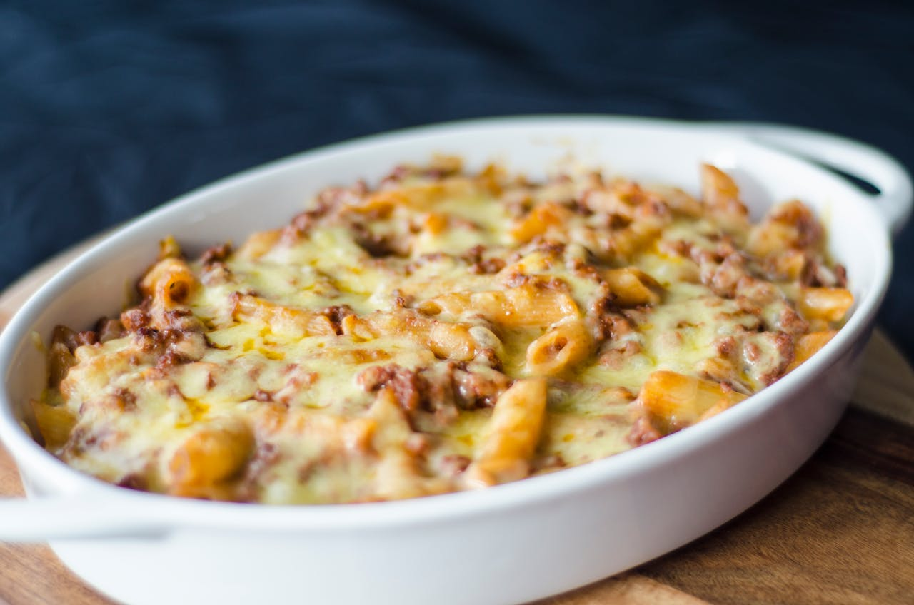

Southern Baked Mac and Cheese

What is southern macaroni and cheese?
It's basically a custard-style baked macaroni and
cheese with eggs and evaporated milk. This version
uses three kinds of cheese and butter and a little
sour cream. It bakes up creamy but firm, hearty and
filling and absolutely delicious.
Ingredients
- Elbow macaroni
- Evaporated milk
- 2% milk
- Eggs
- Butter
- Three grated cheeses of your choicing
- Sour cream
- Smoked Paprika
- Salt
- Pepper
- Seasoning salt
Steps
- Preheat oven to 350º. Bring large pot of water to boil and then salt generously.
Cook macaroni just shy of package directions, al dente. Drain well and place in 9"
by 13" baking dish or pan.
- In same pasta pot, whisk together whole milk, evaporated milk, eggs, and seasonings
until combined. Pour mixture over cooked macaroni in pan.
- Add butter, sour cream, Velveeta, Colby-Jack and sharp cheddar cheeses. Stir to
combine well and top evenly with shredded mild cheddar.
- Bake for 35 to 40 minutes until bubbly and lightly browned on top. Let rest 10
minutes or so before serving. Enjoy!